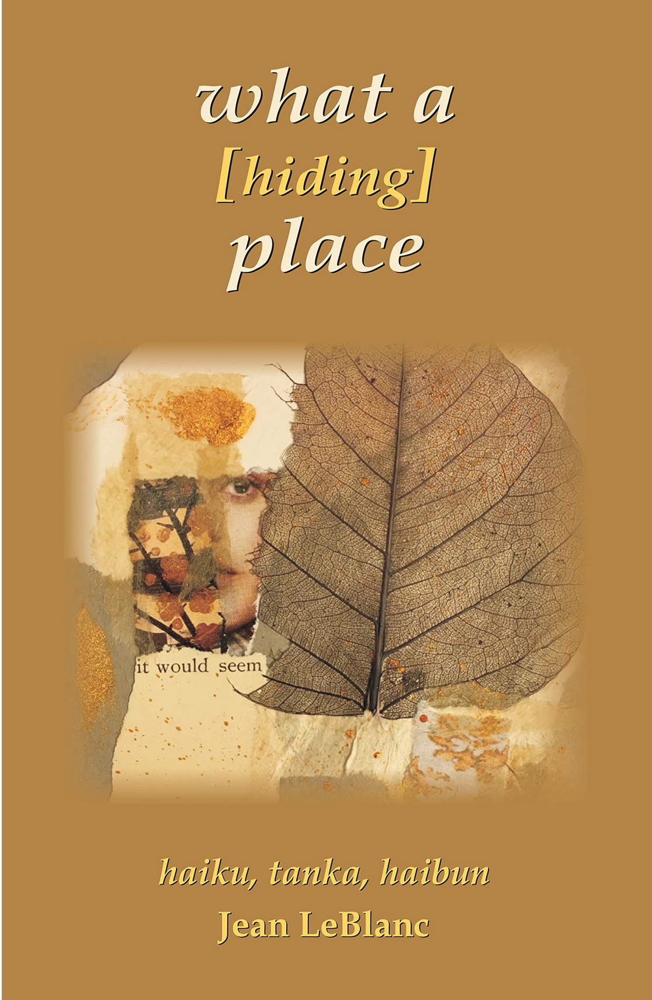

Jean LeBlanc, what a [hiding] place, A Review by Tony Beyer
Jean LeBlanc, what a [hiding] place, Cyberwit.net, Allahabad, India, 2019, 90pp, ISBN 978-93-88125-59-8
Often a useful way of accessing a poet’s work is to identify key words which recur through several poems. Jean LeBlanc’s verbal signatures in this substantial collection of haiku, tanka and haibun include the words crows, ink, and shards. To start with, crows (usually in snowy landscapes) are a contrasting motif deeply embedded in Buson’s poetry and painting. Similarly, ink can be a contrasting image, bright and shining when wet, or dark and opaque when it has dried. These associations honour the centuries-long heritage of haiku. With another key word, shards, Jean LeBlanc is more exploratory, questioning and modern in her approach.
The book begins with a haibun-shard which reads in its entirety:
Fragment Scribbled during a Panel Discussion on Contemporary Poetry
Do I want to know there are anti-lyric factions, anti-narrative factions, anti-whatever…I cannot change any of this so why not go forward being irrelevant
and happy in my own work…
on every shoulder
the chip
of a poem
This is a laudable manifesto, worth pinning above the workspace of any committed (and consequently conflicted) writer. While traditions are there to guide and encourage us, we are also on our own when it comes to making it new. Let relevance look after itself.
There are many fine single examples of haiku, tanka and (relatively sparing) haibun in this compilation but the true revelation is the book itself. Some seasonal organisation occurs behind the selection although it is not rigidly applied. Of course, it’s hard to be certain, but the poems give the general feeling of having been arranged in chronological order of composition, beginning with an intelligent awareness of the fragmentary condition of human perception, let alone literary response.
torn words
broken moon
cut from the same
proceed quite swiftly and confidently to
poetry reading
the sun comes out from behind
a dark image
Meanwhile, however, there are items that recall translations of Sappho fragments:
[do you know gentle]
one leaf at a time
these [last] days
or more radically:
[ ] everything
in [ ] pieces
even [ ] the [ ] shards
The spikiness of the square brackets, starting with the book’s title, indicates self-reflection, even reconsideration of the poem’s direction while it is in progress. I was reminded of the kireji, or cutting-word, in traditional haiku, instantly shifting attention in a live-action experience of thought. While the central passages of haiku and their variants are more recognisably part of a wider culture of English-language activity, the element of energetic dissent underpins many of the book’s distinct successes. The buoyant, observant personality of these poems operates very accurately at the level of specific word choice:
four compass points
a lot of get lost room
in between
There is balance in the quiet melancholy appropriately confined to tanka:
it was its color
I wanted –
as soon as I
transplant it
I forget its name
and again:
the soft earth
receives the crocus bulbs –
who would we be
without a grave or two
to attend
The eight haibun effectively match prose and haiku, each part re-interpreting the other. Like the short poems, they often explore the complexities of individual identity.
A discovery for me and a poet whose output I thoroughly applaud, Jean LeBlanc has put together here a magnificent justification for why we all write and why we love this genre of literature, regardless of its many sources and conventions. To be original but still stand within the long succession of human creativity is a fine aim, which she is unarguably pursuing with distinguished results.
|